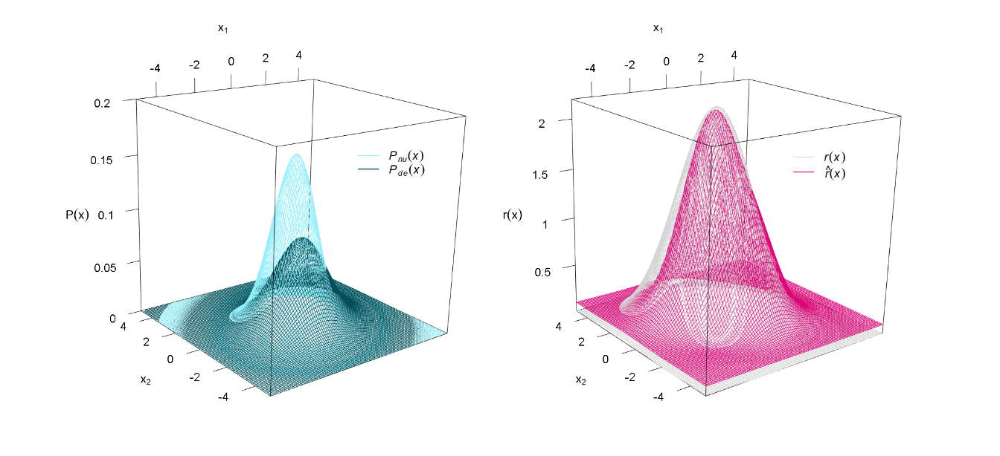
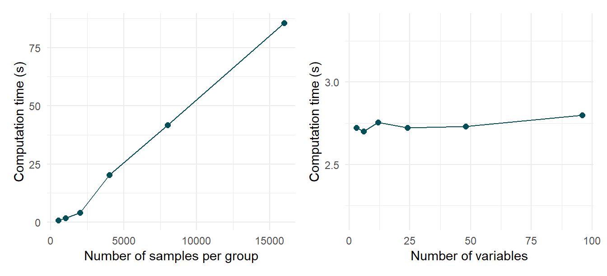
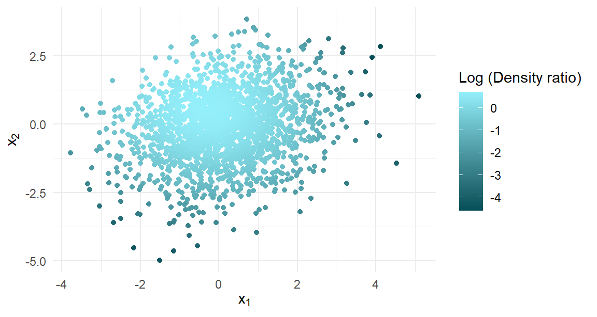

densityratio: Fast, efficient and user-friendly density ratio estimation in R
Distribution comparison with the densityratio R-package
Thom Benjamin Volker 1, 2
t.b.volker@uu.nl
Carlos Poses3 Erik-Jan van Kesteren1
1 Department of Methodology and Statistics, Utrecht University
2 Department of Methodology, Statistics Netherlands
3 Department of Data Science and Biostatistics, University Medical Center Utrecht
Density ratios
Density ratio estimation (Sugiyama, Suzuki, and Kanamori 2012) is an implicit workhorse in many machine learning tasks. Problems as varied as two-sample testing, classification, outlier detection, change-point detection in time-series and importance weighting under sample selection bias can be formulated as problems of density ratio estimation. The crucial element in these tasks is estimating to what extent and how the probability distributions of two groups differ. The density ratio, defined as \[ r(x) = \frac{p_\text{nu}(x)}{p_\text{de}(x)}, \] is a natural measure of this difference and can be interpreted as the relative likelihood of observing a data point under one distribution compared to another.

Figure 1: Two different bivariate normal distributions on the left and their density ratio on the right (the true density ratio and the estimated density ratio).
This intuition is visualized in Figure 1.
The left panel shows two bivariate normal distributions with parameters \(\mathbf{\mu}_\text{nu} = (0, 0)^T\) and \(\mathbf{\Sigma}_\text{nu} = \begin{pmatrix}1 & 0 \\ 0 & 1\end{pmatrix}\) for the numerator distribution and \(\mathbf{\mu}_\text{de} = (\frac 1 4, -\frac 1 4)^T\) and \(\mathbf{\Sigma}_\text{de} = \begin{pmatrix}2 & \frac 1 2 \\ \frac 1 2 & 2\end{pmatrix}\) for the denominator distribution.
The right panel shows the corresponding density ratio function \(r(x)\) and an estimate of the density ratio \(\hat{r}(x)\) on the basis of \(n_\text{nu} = n_\text{de} = 1000\) samples from each distribution.
Despite impressive theoretical advances, density ratio estimation remains a non-trivial task, partly due to the lack of fast, flexible and user-friendly software implementations.
To this end, we introduce the densityratio R-package (Volker, Poses, and van Kesteren 2024).
The densityratio package
The densityratio package is a powerful and comprehensive toolbox for density ratio estimation, suitable for both beginners and experts.
It provides state-of-the-art estimation methods with a consistent, user-friendly interface, all implemented with performance and accuracy in mind.
To further simplify the workflow, the package includes built-in cross-validation for model selection and hyperparameter tuning, taking the guesswork out of fine-tuning and enabling users to achieve optimal results with minimal effort.
As such, the densityratio package delivers convenience and precision, empowering users at every level.
Flexible estimation
The densityratio package offers multiple estimation methods, tailored to different scenarios:
kliep(): minimizes the Kullback-Leibler divergence between the true and estimated density ratioulsif(): minimizes a squared loss function, which yields an analytical solution to the estimation problemlhss(): extendsulsif()to estimate the density ratio in a subspace where the two distributions are most differentspectral(): spectral series estimator that estimates the density ratio in a lower-dimensional subspace
All methods employ non-parametric kernel models, ensuring flexibility and adaptability to a range of functions.
Fast and efficient
The densityratio package is engineered for speed and efficiency.
To achieve this, all resource-intensive operations are implemented in C++ using the powerful Rcpp (Eddelbuettel, Francois, Allaire, et al. 2024) and RcppArmadillo (Eddelbuettel, Francois, Bates, et al. 2024) libraries.
Furthermore, the package leverages the OpenMP toolkit to enable parallel processing wherever possible.

Figure 2: Computation times of ulsif() for different sample sizes and different numbers of variables.
The computation time of ulsif(), for example, scales linearly with the sample size, and is hardly affected by the number of variables (Figure 2).
User-friendly
All estimation functions share a consistent interface and come with built-in cross-validation for automatic hyperparameter tuning, ensuring optimal performance with minimal user input. The package also includes helper functions that allow to summarize the output, perform hypothesis tests, predict density ratios for new data and visualize the results.
densityratio in practice
We illustrate the densityratio package using the example from Figure 1.
We estimate the density ratio from \(n_\text{nu} = n_\text{de}=1000\) samples using ulsif(), and evaluate whether the groups differ significantly.
## Pearson divergence between P(nu) and P(de): 0.182
## Pr(P(nu)=P(de)) < .001We see that it is very unlikely that the two groups of samples come from the same distribution. Subsequently, we can visualize the estimated density ratio function \(\hat{r}(x)\) to see where the distributions differ the most (darker values indicate smaller density ratio values).

Figure 3: Observed data for both variables with the density ratio values mapped to the color scale.
Finally, it is simple to extract the estimated density ratio for new or existing data points. These values can be interpreted as importance weights, and can be used for various tasks, such as importance sampling or re-weighting.
|
|
Conclusion
The densityratio package combines state-of-the-art methods, user-friendly design, and high-performance computing to deliver a powerful tool for density ratio estimation.
Using optimized C++ implementations, parallel processing solutions, and built-in tools for model selection, the package makes density ratio estimation easily accessible.
References
Eddelbuettel, Dirk, Romain Francois, JJ Allaire, Kevin Ushey, Qiang Kou, Nathan Russell, Inaki Ucar, Douglas Bates, and John Chambers. 2024. Rcpp: Seamless r and c++ Integration. https://www.rcpp.org.
Eddelbuettel, Dirk, Romain Francois, Doug Bates, Binxiang Ni, and Conrad Sanderson. 2024. RcppArmadillo: Rcpp Integration for the Armadillo Templated Linear Algebra Library. https://github.com/RcppCore/RcppArmadillo.
Sugiyama, Masashi, Taiji Suzuki, and Takafumi Kanamori. 2012. Density Ratio Estimation in Machine Learning. Cambridge University Press. https://doi.org/10.1017/CBO9781139035613.
Thorne, Brent. 2019. Posterdown: Generate PDF Conference Posters Using r Markdown. https://github.com/brentthorne/posterdown.
Volker, Thom Benjamin, Carlos Poses, and Erik-Jan van Kesteren. 2024. “Thomvolker/Densityratio: V0.0.1 Let’s Get It Started.” Zenodo. https://doi.org/10.5281/zenodo.13881689.